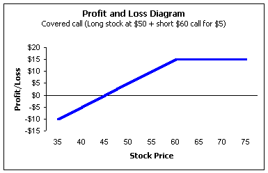

For many investors, the covered call is their first encounter with options. It is a popular strategy because it generates cash into the account and is relatively simple to understand. Unfortunately, there are a lot of misconceptions about this strategy and some can lead to devastating losses. This may be the single-most important piece of information you will read on options, as there are many professionals and academic journals that fall prey to one of the most critical mistakes with covered calls. I will point out the mistake later.
A covered call (also called a covered write) is a strategy where the investor buys stock and then sells a call against it. By selling the call, you are giving somebody else the right to buy your stock at a fixed price.
The reason this strategy is called "covered" is because you are not at risk if the stock moves higher. This is different from the trader who sells calls "uncovered" or "naked," as that position will continually lose money -- theoretically an unlimited amount -- as the stock moves higher. Because of this risk, naked call writing is among the most dangerous of all option strategies. But, with covered writing, this upside risk is removed; you will always be able to deliver the shares no matter how high the stock is trading. The short call is "covered" by the long stock.
For example, you may buy 1,000 shares of JDSU at $102 and sell a one-month $115 strike call currently trading for $4-1/2. Now, for the next month, you may have to sell your shares at a price of $115. This is regardless of where the stock is trading. If the stock is trading at $200 at option expiration, you will most likely be forced to sell your shares for $115. Of course, for this right, the person buying the call paid you $4,500. So on the surface, it doesn't seem to be a bad deal. It's like getting paid to place a sell limit order at $115.
However, there is significant risk to the downside. With our JDSU trade above, we paid $102 for the stock and received $4-1/2 for the option. The stock could fall $4-1/2 points to $97- 1/2, and we'd still be okay -- that's our break-even point. That's another small benefit of covered-calls; they provide a little downside hedge. In other words, they reduce the cost basis of our long stock position. But if the stock continues downward from there, we get more and more into a losing situation. In fact, the maximum we could lose, theoretically, is the $102 we paid for the stock, less the $4-1/2 we got for the option -- a total of $97-1/2 points. In other words, we are at risk for everything below the break-even point.
Many professionals and even academic journals will tell you that the risk of a covered-call position is that you may lose the stock! Nothing could be further from the truth. Risk, for most people, is not defined as missing out on some reward. It is defined as loss of principle. So if you get nothing else from this page, please understand that the risk of a covered call is that the stock goes down, not up. This is the mistake referred to at the beginning.
If a professional tells you the risk of a covered call is losing the stock through assignment of the short call, ask him why it's called a covered position? He will likely tell you, "That's because you're not at risk if the stock moves higher -- you will always be able to deliver the shares." Think about it...on one hand the broker tells you the risk is that the stock moves higher and on the other they tell you you're not at risk if it moves higher. Which is correct?
Are you still not convinced that's the risk? Well, think about this. Say you were thinking of buying a stock trading at $100 and asked your broker what the risk of the investment is. He claims, "Well, the risk is that you buy it for $100 and then sell it later at $120, only to watch it trade higher at a later date." If that were really the "risk," the optimal strategy would be to bet the farm and buy all the stock you can. Buying at $100 and selling at $120 certainly doesn't sound like a lot of risk, does it? The same holds for the covered call -- you are the one holding the stock. The risk is that the stock goes down.
This brings us to another critical point of covered call writing. There are two basic categories of call writers; those who use it as an income producing strategy against stock they like, and those called "premium seekers."
If you write calls against stock you like, then the covered call strategy can be argued to be one of the most powerful strategies for most investors. After all, you are getting a little downside hedge and getting paid to sell the stock at a price you see as favorable. If it is a stock you like, then you obviously are willing to assume all of the downside risk. You would hold the stock whether options were available or not.
However, there are those who do not understand the downside risk side of covered calls. These are sometimes called the "premium seekers." These people look through the option quotes, find one that pays a high premium relative to the stock price, and then enter into a covered call. Usually they follow up this trade with a comment like, "By the way, what exactly does this company do?"
If you trade covered calls this way, stop! I have seen million-dollar accounts fall below $10,000 doing nothing but covered-calls using this method.
|
Trading Example: I remember one investor
who bought 7,000 shares of a stock trading
at $55 (to make matters worse, it was on
margin or borrowed funds). He thought he
was laughing all the way to the bank when he
discovered that a three-week option was
bidding $8 for a $55 stock. "Wow, that's
over 15-fold on your money," he exclaimed.
"At that rate, it would take less than two
and a half years to turn $1,000 into
$1,000,000."
The trader bought the shares and wrote the calls waiting patiently for his windfall to arrive. At option expiration, the stock was trading at $4. Yes, he did get to keep the entire $8 premium for the calls. I'll let you decide if it was worth it. There was a reason the markets were bidding up the options so high. They wanted someone else to hold the risky stock. The risk is that the stock falls. |
Many times you will hear people say that the risk of the stock going down in a covered call position should not be of great concern. They reason that you can always write another call after the first call expires and eventually "write your way out of the stock." There is a big danger in believing this. Covered calls realistically only give you one chance over the short term to write the calls. This is not to say that you will never be able to write a second call against your stock. It's just that you may have to wait a long time to do it.
For example, say a stock is trading at $100 and you write a $105 call for $5. At expiration, the stock is now $75. At this point, you decide to write another call. You'll be lucky if the $105 call is trading for $1/16 which, after commissions, will net you zero. How about the $80 call? Yes, you will definitely get some money here and let's assume another $5. If you write this call and the stock goes up to $80 or higher at expiration, you just locked yourself into a loss! How? Your cost basis is $90 ($100 originally paid for the stock less two calls written for $5 each) and you just gave someone the right to buy your stock for $80, which locks in a $10 loss.
Sometimes you will hear people tell you to "roll down" or "roll up" if the stock is moving significantly. However, there are drawbacks with those strategies as well, so let's take a look at each. Please just understand that covered calls do have a sizeable amount of risk and that you may not be able to realistically keep writing calls month after month.
We just saw a situation where an investor bought stock for $100 and wrote the $105 call for $5, but got locked into a loss because they wrote the $80 call at expiration. Many investors incorrectly think you can beat the market to the punch by rolling down your strike as the stock falls.
A rolldown, for covered calls, is simply a strategy where the investor buys the short call to close and simultaneously sells a lower strike call to open. The new position is a covered call but at a lower strike; the investor has thus "rolled down" their strike price.
For example, say the stock is now trading at $100. The above investor could buy the $105 call to close and simultaneously sell the $100 call to open. However, they will receive a credit less than the difference in strikes (you'll find out why during week 5 when we talk about basic option pricing). So the investor has given someone the right to purchase their stock for $5 less than originally anticipated, yet received less than $5 to do so -- a net loss.
Let's say they roll down for a net credit of $3 and see what happens. Remember, the original trade was buying stock at $100 and selling the $105 call for $3, which gives a cost basis of $97. Once the rolldown is executed, we're assuming the investor receives an additional $3, which gives a new cost basis of $94 for a $6 gain if the stock is called at $100. Keep in mind the original trade had a profit of $8 if called at $105. The reason the investor has reduced their profit margin by $2 is because that's the net loss on the rolldown. Credits can be deceiving with options. A net loss develops because the investor gave somebody the right to purchase his or her stock for $5 less, yet only received $3 for it.
If you roll down long enough, you will eventually lock in a loss. Be very careful when rolling down and keep track of your effective cost basis.
The opposite of the rolldown is the rollup. To enter a rollup with covered calls, you buy the call to close and simultaneously sell a higher strike call to open.
Let's assume our investor is, instead, faced with the stock trading up to $110 now. If they rollup, they may, for example, buy the $105 call to close and simultaneously sell the $110 call to open. Again, we'll assume they pay less than the difference in strikes, which will always be true prior to expiration. If the investor rolls up to the $110 strike for a net debit of $3, they have paid $3 to gain $5.
On the surface, this doesn't appear to be a bad deal. However, keep in mind that with the original position, the investor is more likely to receive $105 from the exercise of the $105 call. Now they are short the $110 call, which is the same price of the stock, which means there is inherently more risk with the rollup. This does not mean that investors should never rollup a covered call, but rather use it sparingly in situations where you are very confident that the stocks price won't fall too dramatically.
Another way to view the additional risk is that, with each rollup, you are raising the cost basis of your long stock position. If you chase a fast rising stock with rollups long enough, you will eventually end up holding a long stock position with a relatively high cost basis on a stock that may come crashing down.
Most people try to roll up to get themselves out of a "losing" situation. For example, the above investor wrote the $105 call. If the stock is suddenly trading for $120, most investors try to undo the "damage" by rolling up. However, you should always remember your reason for writing the call. If you purchase the stock for $100 and are willing to sell it at $105 for a $5 fee (the option premium), you should probably let the stock go. If you never intended to sell your stock, then you must question why you wrote the original call in the first place. Remember, a short call is an agreement to give someone else the right to purchase your stock. If that's not what you wanted to do, then writing calls is the wrong strategy.
Many times investors write calls and regret it later when they see the stock trading for a much higher price. If you have a renewed confidence in the stock, you may want to consider closing out the short call.
Many investors, however, have trouble with this as they feel they are taking a huge loss. This is absolutely false. Let's take a look at an example and see why. Say an investor has $40,000 cash in the account with no other positions. If he buys 100 shares of stock for $100, he now has $10,000 worth of stock and $30,000 cash. Now assume he writes a $100 call for $3, which gives him $30,300 in cash for a total account value of $40,300.
Now assume the stock is $130 at expiration, which makes the $100 call worth $30. If the investor buys the call to close in order to not lose the stock, they must pay $30. Because they received $3 initially, they feel they have incurred a loss of $27. But they often fail to realize that the stock position is now worth more, too. If they buy the call to close, they will pay $3,000 but now their stock is worth $13,000! That's because they are no longer obligated to sell the stock for $100 once they buy the $100 call to close. The stock is worth $13,000 and the cash is reduced to $27,300 for a total account value of $40,300 -- exactly the same as before the closing of the call.
If you exit a covered call position by buying the call to close, you're really swapping cash for an unrealized capital gain in the stock. In the above example, the investor lost $3,000 for sure in cash, in exchange for an unrealized gain of $3,000 in the stock.
So if you have new information on the stock and decide you want to keep it, buying the call to close is not the worst thing to happen. You really don't lose anything at the moment you buy back the call -- but you may if the stock falls afterward. Buying covered calls to close doesn't really destroy account value; it just changes the values of the assets in the account.
If you decide to get out of a covered call position by buying back the call, be sure you are comfortable holding the stock at the current valuations.
In the profit and loss diagram, we are assuming an investor buys stock at $50 and writes a $60 call for $5. You can see the break-even point has been reduced to $45 because they paid $50 for the stock but received $5 for the call, giving them an effective cost basis of $45. Also, we see that for any stock price above $60 -- the strike -- the profit is capped at $15, which is the maximum. Again, you must wonder why many professionals tell you this is the risk zone. It should be evident from the chart that the downside risk is that the stock falls.
|
 Covered calls are a very useful strategy if used properly. If you use this strategy, make sure you are writing calls against stock you would hold regardless. Otherwise, treat the position as highly speculative and invest accordingly. |